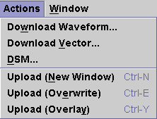

Actions Menu
The Actions menu provides functions for viewing and modifying waveforms.

The following menu items are included:
Download Waveform - enables you to download a waveform, which you have defined using the Signal Analyzer, to the AWG's memory. You must specify a target trace ID.
Download Vector... - enables you to download the generated waveform to the vector memory. The vector memory stores the digital data required for DAC tests. A typical application of this function is to convert a sinewave created by the Generate function to digital code, and use this as the input for a DAC during a distortion test. You must specify a target trace ID.
DSM... - activates the DSMT (DAC Source Memory Tool), which generates a vector setup to test chips with embedded DAC. It allows you to specify DAC vectors independent of digital vectors. You must specify a target trace ID.
Upload (New Window) - allows the selected waveform to be placed in a new focused graph table in the Waveform Navigator Tool (WNT) and the waveform is displayed in a new Data Display Panel of the Waveform Graphs Tool (WGT).
Upload (Overwrite) - allows the selected waveform to be placed in a new focused graph table in the WNT. The waveform is displayed in the focused Data Display Panel of the WGT, and any previous waveforms will be cleared.
Upload (Overlay) - allows the selected waveform to be placed in a new focused graph table in the WNT. The waveform is displayed in the focused Data Display Panel of the WGT, and any previous waveforms will not be cleared.